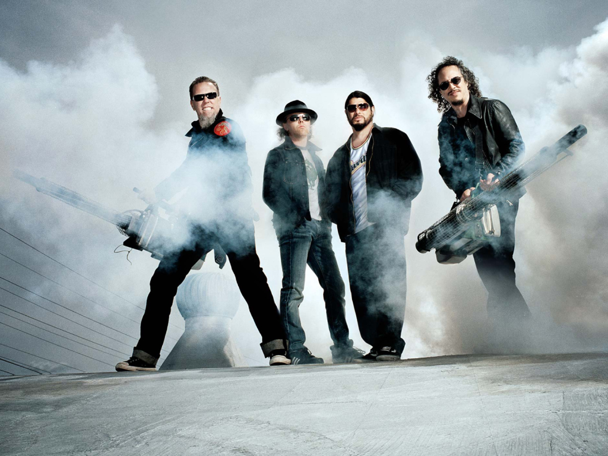

Metallica
Metallica es una banda de thrash metal estadounidense originaria de Los Ángeles, pero con base en San Francisco desde febrero de 1983. Fue fundada en 1981 en Los Ángeles por Lars Ulrich y James Hetfield, a los que se les unirían Dave Mustaine y Ron McGovney. Estos dos músicos fueron después sustituidos por el guitarrista Kirk Hammett y el bajista Cliff Burton, Dave Mustaine fue despedido un año después de ingresar en la banda debido a su excesiva adicción al alcohol y su actitud violenta, y fundó la banda Megadeth, siendo sustituido por Kirk Hammett ex guitarrista de Exodus.
Ron renuncia a la banda debido al mal comportamiento de Dave Mustaine, era violento y problemático cuando estaba bajo el efecto del alcohol. El colmo fue cuando Mustaine mojó el bajo de Ron con cerveza, él sin saberlo lo conectó, recibiendo una descarga eléctrica. Es entonces, tras contactar con Cliff Burton que la banda se traslada a San Francisco. (Cabe resaltar que Ron sabía que lo iban a despedir y sustituir por Cliff Burton).
Por otra parte, el 27 de septiembre de 1986, la muerte de Cliff Burton en un accidente de autobús en Suecia, durante una de sus giras, provocó la entrada al grupo de Jason Newsted, quien, tras su abandono quince años más tarde, sería sustituido por el bajista actual, Robert Trujillo. A la fecha, la banda ha editado 10 álbumes de estudio, siendo el último de estos "Hardwired...To Self-Destruct", el cual fue lanzado mundialmente el 18 de noviembre del 2016. Las ventas totales de Metallica superan los 120 millones, y se les considera parte de los cuatro grandes del thrash metal, junto con Megadeth, Slayer y Anthrax. Además, el grupo ha conseguido numerosos premios musicales, entre los que destacan nueve Grammys, dos premios otorgados por la cadena musical MTV, dos galardones de la Academia de Música Americana (American Music Awards) y dos premios de la revista Billboard, además de poseer una estrella en el Paseo de la Fama de la revista Kerrang!.
Inicios
Se considera que la historia de Metallica comenzó en 1980 cuando el joven Lars Ulrich, originario de Gentofte, Dinamarca, se trasladó con su familia a Los Ángeles. Hijo del tenista profesional Torben Ulrich, Ulrich había desarrollado una enorme afición por el heavy metal durante los años 70, cuando la NWOBHM (Nueva Ola de Heavy Metal Británico) tenía gran auge en la escena underground europea. Con su traslado a Estados Unidos, planeado por su padre con el objetivo original de preparar una carrera dentro del tenis profesional, dicha afición de Ulrich se convertiría prácticamente en una obsesión, que se concentraba especialmente en grupos desconocidos de la nueva corriente inglesa. Su prioridad al llegar a Los Ángeles fue la de explotar su capacidad musical junto con otros jóvenes, lo que le llevó en 1981 a publicar un anuncio en la revista Recycler, en el que solicitaba un guitarrista para formar una banda con influencias de las bandas de la NWOBHM, concretamente sus bandas preferidas: Diamond Head, Iron Maiden y Tygers of Pan Tang. El joven James Hetfield, hijo de un propietario de una compañía de camiones y de una cantante de ópera que educaron a sus hijos en la Ciencia Cristiana, respondió a su anuncio. Comenzaron a ensayar juntos y, aunque al principio a Hetfield no le convencía la forma de tocar de Ulrich, finalmente formaron una banda. La clave de esta unión fue el tema que tenía reservado por parte de su amigo Brian Slagel, fundador de la compañía discográfica, entonces recién creada, Metal Blade Records, en el primer recopilatorio que editaría el sello, titulado Metal Massacre.
Formación inicial y primeras canciones

Ulrich se trasladó al local que Hetfield poseía junto a su amigo Ron McGovney, el cual provenía de una familia acomodada que poseía numerosas propiedades. Hetfield le pidió a McGovney que tocara el bajo en la banda y se ofreció a enseñarle. Además, Ron fue el diseñador del ya famoso logotipo de la banda.[cita requerida] Tras incesantes intentos de conseguir un guitarrista solista influido por Motörhead y Iron Maiden, encontraron a Lloyd Grant, un joven guitarrista afroamericano con quien tocaron la primera demo de Metallica, titulada Hit the Lights (1981).
Lloyd, que pensaba quedarse poco tiempo más en la banda, fue al poco tiempo sustituido por Dave Mustaine en la guitarra líder, completando así la primera formación de Metallica, ya que en Mustaine encontraron a la persona ideal para cerrar la formación. El primer paso fue la grabación del tema para la primera entrega de Metal Massacre. El elegido sería "Hit the Lights", tema que provenía de la anterior banda de Hetfield, Leather Charm, considerado uno de los primeros temas del thrash metal. El debut de Metallica en directo tendría lugar el 14 de marzo de 1982 en el club Radio City de Anaheim, en una actuación en la que la falta de experiencia sobre el escenario ocasionó serios problemas a la banda. Dos semanas más tarde tendrían la oportunidad de enmendar su error abriendo dos noches seguidas para los ingleses Saxon en el local Whiskey-A-Go-Go de Los Ángeles. Cabe decir que dentro del libreto del álbum de versiones que la banda realizó en 1998 titulado Garage Inc pueden encontrarse reproducidas las notas que el propio Ulrich tomó en aquel momento sobre la marcha de estos dos conciertos, incluyendo los setlists de ambas noches y las impresiones del batería sobre la marcha de las mismas.
Formación Definitiva
Con la edición de Metal Massacre en el mes de julio de 1982, el grupo, tras renegar de la versión de "Hit the Lights" aparecida en el mismo por encontrarse completamente desfasada de lo que constituía su nuevo sonido, decidió grabar su primer demo, titulado No Life 'til Leather, primera estrofa de la canción Hit the Lights. Siete temas formarían parte de este demo, entre los que se encuentra una versión mucho más potente y acelerada de "Hit the Lights". Con una agenda de conciertos cada vez más ajustada, Hetfield y Ulrich comenzaron a plantearse la sustitución de McGovney. Años después, éste dijo en una entrevista que el resto de la banda le dejaba que se encargara de todo. Es en ese momento cuando empiezan a aparecer los problemas con Dave Mustaine, derivados de un carácter extremadamente violento unido al consumo extremo de alcohol y drogas. Conocedor de la necesidad de Metallica de reclutar un nuevo bajista, Brian Slagel recomienda a Lars y James la banda Trauma, que acababa de editar uno de sus temas en la segunda entrega de Metal Massacre. Hetfield y Ulrich quedarían totalmente impresionados con la destreza y presencia en el escenario de su bajista, Cliff Burton, ofreciéndole inmediatamente el entrar a formar parte de Metallica, lo cual sería inicialmente rechazado por Burton.
Albums
Kill 'Em All

A principios de 1983, el mánager y promotor de conciertos Johnny Zazula (con la ayuda de su mujer) se puso en contacto con el grupo para ofrecerles un traslado a Nueva York, con la idea de organizar varios conciertos en la Costa Este y, si todo marchaba bien, grabar un álbum. Tras aceptar la oferta, Metallica inició el viaje el 1 de abril, y tras atravesar todo el país, fijaron su nuevo lugar de residencia en el Music Building de Nueva York, un edificio en el que cohabitaban con varias bandas de rock, entre las que se encontraba Anthrax, iniciando amistad y camaradería entre los dos grupos.
A los diez días de su llegada a Nueva York, la situación con Mustaine se hizo insostenible, con lo que Hetfield y Ulrich sorprendieron a un Mustaine recién despierto para anunciarle que estaba fuera del grupo y que en un breve plazo salía el autobús que habían reservado para su vuelta a casa (posteriormente Dave fundaría Megadeth). Los integrantes ya estaban preparados para esto. Le pidieron a Zazula que se pusiese en contacto con el guitarrista de Exodus, Kirk Hammett, para unirse a la banda. Al principio, Kirk creía que la llamada de Zazula era una broma, pero finalmente aceptó. De forma simultánea a la expulsión de Dave, Kirk Hammett dejaba Exodus y se disponía a salir hacia Nueva York, llegando esa misma noche a altas horas de la madrugada. Alumno de Joe Satriani, Hammett introduciría un sonido más melódico, técnico y estilizado en Metallica, que se haría patente a partir del segundo álbum del grupo, puesto que el primero estaba compuesto en su totalidad en el momento de su entrada. El debut del nuevo guitarrista tendría lugar en el neoyorquino "Showplace" abriendo para The Rods.
Ride The Lightning

Terminada la gira, Metallica entraría el 20 de febrero en los Sweet Silence Studios de Copenhague para la grabación de su segundo álbum, recayendo todo el peso de la producción en el ingeniero residente Flemming Rasmussen, quien ya había trabajado anteriormente con bandas como Mercyful Fate y Rainbow y posteriormente con Sepultura y Blind Guardian. El ajustado presupuesto del que Zazula disponía se convirtió en el principal problema durante la grabación del álbum, que transcurrió a un ritmo frenético durante menos de un mes, quedando finalizada el 14 de marzo, y viéndose solo interrumpida por el fallido tour Hell On Earth junto a The Rods y Exciter, finalmente cancelado por la escasa venta de entradas. A la considerable evolución mostrada en estos temas se unía el rumor latente de que el grupo estaba trabajando en una balada, lo que provocó cierta agitación dentro del sector más extremo de los fanáticos de la banda.
Ride the Lightning, nombre que recibiría finalmente el álbum, supondría un gran cambio en el sonido de la banda, que se adentraba en terrenos mucho más melódicos. Las labores de composición contaron con la colaboración de Burton y Mustaine. También se confirmó el rumor la inclusión de una balada, que recibiría el título de "Fade to Black". Fue escrita por Hetfield inspirándose en el robo de equipo que la banda sufrió el 14 de enero de aquel mismo año (1984).
Master Of Puppets y La Muerte de Cliff Burton

Pasados dos años de gira, volvieron a los Sweet Silence Studios. De allí surgió Master of Puppets, uno de los discos más alabados dentro del heavy metal, la canción principal homónima está considerada por muchos seguidores de la banda como la mejor de Metallica. El disco ha vendido hasta la fecha más de 7 millones de copias en todo el mundo, a pesar de que solo llegó en su día al puesto 29 del Billboard.
La gira de presentación del disco comenzó en verano de 1986 con el guitarrista rítmico John Marshall, ya que Hetfield se había quebrado la muñeca en un accidente de skateboard. En dicha gira, esta vez en Europa y con Hetfield recuperado, el autobús de la gira circulaba por las carreteras suecas a las 6:15 horas de la mañana del 27 de septiembre; Cliff se encontraba durmiendo en la litera asignada a Kirk Hammett (debido a que este último había perdido en una apuesta), y repentinamente el autobús volcó cerca del pueblo de Ljungby, mientras que Hammett, Ulrich y Hetfield no sufrieron daños físicos preocupantes, el autobús cayó sobre el cuerpo del bajista, tras salir despedido por la ventana, causándole la muerte de forma instantánea. Según el conductor, el autobús derrapó debido a las placas de hielo que había en la carretera, lo que ocasionó el vuelco; Hetfield, furioso por lo sucedido, intentó golpear al conductor, siendo detenido por sus compañeros. Posteriormente recorrió una distancia considerable de la carretera buscando las placas, pero no encontró nada. En el funeral de Burton, se escuchó el tema «Orion».
Su muerte provocó la suspensión de la gira de la banda y la retirada de los tres miembros restantes para pensar al respecto de su futuro. Finalmente, y después de consultar a los familiares del fallecido bajista, decidieron continuar con la carrera musical de la banda, y reclutaron al bajista Jason Newsted de la banda Flotsam and Jetsam, en lugar de Cliff, puesto para el cual también optó Les Claypool entre más de 40 músicos. Al año siguiente la banda volvería a Europa para completar la gira con su nuevo bajista.
Garage Days Re-Revisited y ...And Justice For All

En 1987 lanzarían un gran álbum de versiones de las bandas que les influyeron titulado Garage Days Re-Revisited para introducir a Newsted a los seguidores de la banda. El nombre proviene de las sesiones de grabación de dicho álbum en el garaje de Ulrich. Un año después lanzarían un nuevo disco, titulado ...And Justice for All. Es su álbum más oscuro, con un sonido dominado por ritmos de batería densos y muy acelerados, de gran complejidad. Pese a lo que podría parecer, es un trabajo menos melódico que sus predecesores, con un ambiente negativo, y unas letras más cercanas a la crítica social, política e incluso ecológica ("Blackened"). Destacan los temas "One" (canción con el primer videoclip grabado por la banda, recogiendo escenas de la película Johnny cogió su fusil; con este videoclip, la banda comenzó a ganar fama en el ámbito mainstream, "To Live Is to Die" (dedicado a Cliff Burton basándose en los bocetos de una canción que se encontraba componiendo en la que se oye un poema compuesto por el desaparecido bajista a pesar de ser un tema instrumental), "...And Justice for All" y "Blackened".
Esta producción marcó un hito en el equipamiento de las guitarras de Metallica, ya que dejan sus full stacks valvulares Marshall, pasando a utilizar la Mesa Boogie, obteniendo un sonido mucho más agresivo. Algunas de las escasas críticas que recibió al disco se basan en, a pesar de la evolución, la poca calidad en la producción, señalando el "fino zumbido" de las guitarras, el "clickeo" de la batería, y el escaso volumen que tiene el bajo, el cual casi no se percibe siendo imposible de atisbar en muchos momentos. A pesar de estas características, el álbum ha vendido hasta la fecha más de 8 millones de copias, a pesar de tener una promoción casi nula sin ningún tipo de repercusión en canales de televisión como MTV.
Actuación de Metallica en 1989 en la gira Damage Justice Tour
Gracias a este trabajo, Metallica recibe su primera nominación a los premios Grammy en 1989, en la categoría de Mejor Interpretación Vocal o Instrumental de Hard Rock/Metal. Contra todo pronóstico, el ganador del premio fue el álbum Crest of a Knave de Jethro Tull, quienes no acudieron a la gala. Lars Ulrich se referiría a ellos después de ganar el Grammy en 1992 en la misma categoría por el álbum homónimo de la formación: "Queremos dar las gracias a Jethro Tull por no haber sacado ningún disco este año".
Metallica (The Black Allbum)

Su siguiente trabajo, llamado Metallica pero mejor conocido como The Black Album se publicó en 1991 y contó con la producción de Bob Rock, mejor conocido por su trabajo con Bon Jovi y Mötley Crüe, entre otros. Con canciones como "Enter Sandman", "Holier Than Thou", "Sad But True", "The Unforgiven", "Don't Tread On Me", "Through the Never", "My Friend Of Misery", "The God That Failed", "The Struggle Within", "Of Wolf and Man", "Wherever I May Roam" y "Nothing Else Matters", vendió más de 500 000 copias en su primera semana en Estados Unidos, llegando al primer puesto en la lista del Billboard,26 en parte gracias a su carácter más comercial. Solo en aquel país, la Recording Industry Association of America (RIAA) certificó catorce millones de copias vendidas desde su lanzamiento. El nombre popular del disco The Black Album (El álbum negro) proviene de la portada, que solo contiene el logo de Metallica en la esquina superior izquierda y el dibujo de una serpiente en la esquina inferior derecha, todo ello sobre un fondo negro. Hetfield explicó posteriormente esta composición y dijo que la banda quería que la gente se fijase en la música que contenía el álbum, y no en el simbolismo ni en el diseño artístico. La canción "Enter Sandman" ocupa el puesto #408 entre las 500 mejores canciones de todos los tiempos en la lista de Rolling Stone .
Load, Reload, Garage Inc. y S&M

Su disco homónimo, conocido popularmente como The Black Album marcaría un punto de inflexión en la carrera musical de Metallica, y sus dos discos consecutivos titulados Load (1996) y ReLoad (1997), de estilos idénticos entre sí ya que estaban pensados para formar un mismo álbum doble, están totalmente dominados por un sonido que muchos antiguos seguidores consideraron como más comercial y muy suavizado con letras más suaves, más cercano al rock alternativo que triunfaba en aquella época. Quizás el cambio más llamativo para sus seguidores fue el cambio de imagen: se cortaron las melenas y cambiaron el fácilmente reconocible logotipo que identificaba a Metallica. Esto se vio también reflejado en el cambio de sello discográfico, ya que las relaciones entre Elektra Records y la banda finalizaron después de casi diez años cobrando solo un 14% de los beneficios netos de Metallica, aunque acabarían reanudando su contrato poco después. El éxito de ambos álbumes no fue tan contundente como el del álbum negro. Muchos adolescentes se convirtieron en seguidores de Metallica, al mismo tiempo que muchos de sus antiguos seguidores se veían en gran medida "traicionados" por la nueva dirección tomada por el grupo, lo que desde entonces lleva alimentando una gran polémica. En los premios Grammy entraron por primera vez en la categoría Heavy Rock en vez de Heavy Metal, como ocurría antes del mencionado Load. Ese mismo año la banda finlandesa Apocalyptica debutó con su homenaje a Metallica Plays Metallica by Four Cellos, que era básicamente un álbum con covers de Metallica tocados únicamente con violonchelos.
St. Anger & Some Kind of Monster

En 2001, el bajista Jason Newsted, quien anteriormente había tenido serias discusiones con los demás integrantes sobre sus proyectos fuera del grupo, abandonaría Metallica alegando desgaste físico y motivos personales. Poco tiempo después, en la controvertida entrevista realizada por Playboy28 por separado a todos los miembros de la banda varios meses antes, se descubriría que uno de los principales motivos de la marcha del bajista era la rotunda negativa de Hetfield a la publicación del disco de Echobrain, la banda alternativa de Newsted. Tras un largo proceso de selección en busca de sustituto, y en el que se barajaron músicos como Twiggy Ramírez, se contrataría a Robert Trujillo, quien había sido bajista de Suicidal Tendencies, Black Label Society y Ozzy Osbourne en sus actuaciones en directo. Cabe resaltar que Jason Newsted, tras dejar Metallica, perteneció durante un tiempo a la banda de Osbourne, en la que militaba Mike Inez, miembro de Alice in Chains y que también se rumoreó como sustituto. Este mismo año se crea la banda homenaje satírica, Beatallica, la cual fusiona la música de The Beatles y Metallica. Tuvieron un problema legal con Sony, poseedora de los derechos sobre el material de los Beatles, pero fueron ayudados por Lars Ulrich.
Death Magnetic

En el 2006, la banda realizó el tour Escape from the studio 06, en el que tocaron el disco Master of Puppets entero en conmemoración de su vigésimo aniversario. Durante este tour, la banda tocó dos nuevas canciones: "New Song (Death is not the End)" y "The Other New Song (Vultorous)".
El 4 de diciembre del 2006 fue lanzada una compilación de todos sus vídeos desde 1989 hasta 2004, titulada The Videos. Esta incluye todos sus vídeos desde "One" hasta "Some Kind of Monster" y, como bonus, las dos versiones del vídeo de "One", la versión teatral de "The Unforgiven" de once minutos, el tráiler del documental Some Kind of Monster y además, por primera vez en DVD, la introducción de 2 of One. También Kirk y James aparecieron en el programa Metalocalypse y la banda entera en Los Simpson, quienes además aparecerían en la película Get Thrashed. Un año más tarde, el grupo grabó la versión de Ennio Morricone "The Ecstacy of Gold", el cual apareció en el disco homenaje We All Love Ennio Morricone. Luego, en los meses de junio y julio realizaron la gira Sick Of The Studio 07. La banda comenzó a grabar el álbum Death Magnetic el 14 de marzo de 2007. Éste cuenta con Rick Rubin como productor, reemplazando a Bob Rock, que había ocupado dicho puesto desde hace más de 15 años. El álbum es finalmente lanzado el 12 de septiembre de 2008. Se han establecido algunas citas para su gira en 2008, y anteriormente, participaron en el Electric Weekend de Getafe, siendo cabezas de cartel junto con Rage Against the Machine.
Hardwired... To Self-Destruct

Hardwired ... to Self-Destruct es el décimo álbum de estudio de la banda de heavy metal estadounidense Metallica , lanzado como un álbum doble el 18 de noviembre de 2016 por su vanidad Blackened Recordings. Es su primer álbum de estudio en ocho años después de Death Magnetic (2008), marcando la brecha más larga entre dos álbumes de estudio en la carrera de la banda. También es su primer álbum de estudio lanzado a través de Blackened. Cableado ... a Autodestrucción fue producido por Greg Fidelman , quien diseñó y mezcló Death Magnetic .
El álbum fue el sexto álbum de estudio consecutivo de Metallica en debutar en el número uno de los Billboard 200 de Estados Unidos , vendiendo 291,000 unidades equivalentes de álbum en su primera semana, y encabezando las listas en 57 países. Tener este álbum número uno marcó la segunda vez en la historia que cualquier banda de cualquier género, junto con Dave Matthews Band , tendría seis álbumes consecutivos de debut en el número uno. El álbum ha vendido más de cinco millones de copias en todo el mundo, y la recepción crítica del álbum fue en su mayoría positiva.